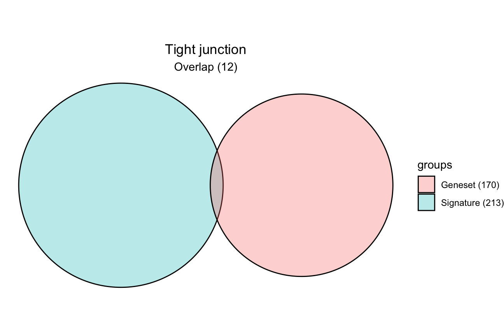
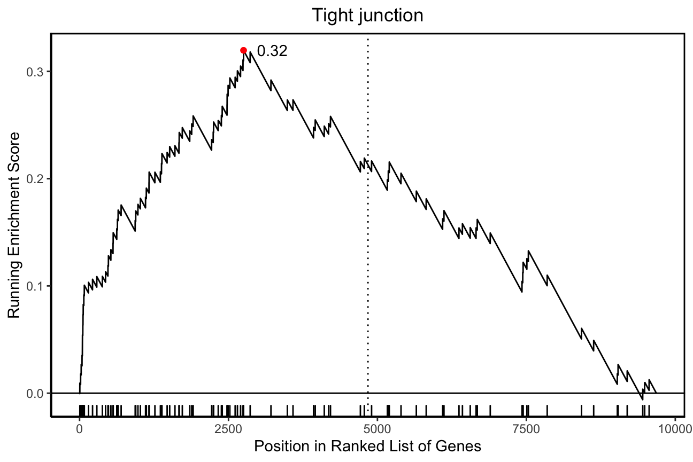
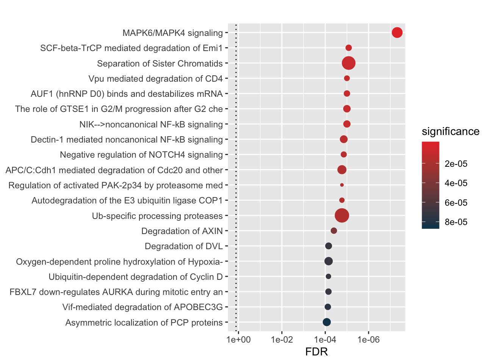

vignettes/hypeR.Rmd
hypeR.RmdGeneset enrichment is an important step in biological data analysis workflows, particularly in bioinformatics and computational biology. At a basic level, one is performing a hypergeometric or Kol-mogorov–Smirnov test to determine if a group of genes is over-represented or enriched, respectively, in pre-defined sets of genes, which suggests some biological relevance. The R package hypeR brings a fresh take to geneset enrichment, focusing on the analysis, visualization, and reporting of enriched genesets. While similar tools exists - such as Enrichr (Kuleshov et al., 2016), fgsea (Sergushichev, 2016), and clusterProfiler (Wang et al., 2012), among others - hypeR excels in the downstream analysis of gene-set enrichment workflows – in addition to sometimes overlooked upstream analysis methods such as allowing for a flexible back-ground population size or reducing genesets to a background distribution of genes. Finding relevant biological meaning from a large number of often obscurely labeled genesets may be challenging for researchers. hypeR overcomes this barrier by incorporating hierarchical ontologies - also referred to as relational genesets - into its workflows, allowing researchers to visualize and summarize their data at varying levels of biological resolution. All analysis methods are compatible with hypeR’s markdown features, enabling concise and reproducible reports easily shareable with collaborators. Additionally, users can import custom genesets that are easily defined, extending the analysis of genes to other areas of interest such as proteins, microbes, metabolites, etc. The hypeR package goes beyond performing basic enrichment, by providing a suite of methods designed to make routine geneset enrichment seamless for scientists working in R.
Download the package from Bioconductor.
if (!requireNamespace("BiocManager", quietly = TRUE))
install.packages("BiocManager")
BiocManager::install("hypeR")Install the development version of the package from Github.
devtools::install_github("montilab/hypeR")Or install the development version of the package from Bioconductor.
BiocManager::install("montilab/hypeR", version='devel')Load the package into R session.
library(hypeR)hypeR employs multiple types of enrichment analyses (e.g. hypergeometric, kstest, gsea). Depending on the type, different kinds of signatures are expected. There are three types of signatures hypeR() expects.
# Simply a character vector of symbols (hypergeometric)
signature <- c("GENE1", "GENE2", "GENE3")
# A pre-ranked character vector of symbols (kstest)
ranked.signature <- c("GENE1", "GENE2", "GENE3")
# A pre-ranked named numerical vector of symbols with ranking weights (gsea)
weighted.signature <- c("GENE1"=1.22, "GENE2"=0.94, "GENE3"=0.77)A geneset is simply a list of vectors, therefore, one can use any custom geneset in their analyses, as long as it’s appropriately defined. In our tutorials, we will use genesets from REACTOME. There is also what is called relational genesets, whereby genesets are organized into a hiearchy; we will explore these in later tutorials.
In these tutorials, we will use example data. The example data includes an expression set object as well as pre-computed results from common workflows such as diffential expression and weighted gene co-expression analyses.
hypdat <- readRDS(file.path(system.file("extdata", package="hypeR"), "hypdat.rds"))Using a differential expression dataframe created with limma, we will extract a signature of upregulated genes for use with a hypergeometric test and rank genes descending by their differential expression level for use with a kstest. We’ll also import genesets from KEGG.
limma <- hypdat$limma
signature <- limma %>% filter(t > 0 & fdr < 0.001) %>% use_series(symbol)
ranked.signature <- limma %>% arrange(desc(t)) %>% use_series(symbol)
gsets <- hyperdb_fetch(type="gsets", "KEGG_2019_Human")All workflows begin with performing hyper enrichment with hypeR(). Often we’re just interested in a single signature, as described above. In this case, hypeR() will return a hyp object. This object contains relevant information to the enrichment results and is recognized by downstream methods.
hyp_obj <- hypeR(signature, gsets, test="hypergeometric", bg=50000, fdr_cutoff=0.01, do_plots=TRUE)print(hyp_obj)## hyp object:
## data: 67 x 6
## plots: 67
## args: signature
## gsets
## test
## bg
## pval_cutoff
## fdr_cutoff
## weights_pwr
## absolute
## do_plots
## verbosehyp_df <- hyp_obj$as.data.frame()
print(head(hyp_df[,1:3]), row.names=FALSE)## label pval fdr
## Tight junction 1.2e-11 3.7e-09
## Salmonella infection 3.8e-09 5.8e-07
## MAPK signaling pathway 6.6e-09 6.8e-07
## Endocytosis 9.9e-09 7.6e-07
## Neurotrophin signaling pathway 5.0e-08 3.1e-06
## Ras signaling pathway 7.2e-08 3.7e-06
hyp_obj <- hypeR(ranked.signature, gsets, test="kstest", fdr_cutoff=0.01, do_plots=TRUE)print(hyp_obj)## hyp object:
## data: 6 x 6
## plots: 6
## args: signature
## gsets
## test
## bg
## pval_cutoff
## fdr_cutoff
## weights_pwr
## absolute
## do_plots
## verbosehyp_df <- hyp_obj$as.data.frame()
print(head(hyp_df[,1:3]), row.names=FALSE)## label pval fdr
## Tight junction 1.4e-09 4.3e-07
## Proteasome 1.7e-05 2.6e-03
## Viral carcinogenesis 4.1e-05 3.9e-03
## Sphingolipid signaling pathway 5.3e-05 3.9e-03
## Steroid biosynthesis 6.4e-05 3.9e-03
## Longevity regulating pathway 1.0e-04 5.1e-03
hyp_to_excel(hyp_obj, file_path="hyper.xlsx")hyp_to_table(hyp_obj, file_path="hyper.txt")For most purposes, the genesets hosted by msigdb are more than adequate to perform geneset enrichment analysis. There are various types of genesets available across many species. Therefore, we have added convenient functions for retrieving msigdb data compatible with hypeR.
## |------------------------------------------------------------|
## | Available Gene Sets v6.2.1 |
## |------------------------------------------------------------|
## | C1 | Positional (326) |
## | C2.CGP | Chemical and Genetic Perturbations (3433) |
## | C2.CP | Canonical Pathways (252) |
## | C2.CP.BIOCARTA | Canonical BIOCARTA (217) |
## | C2.CP.KEGG | Canonical KEGG (186) |
## | C2.CP.REACTOME | Canonical REACTOME (674) |
## | C3.MIR | Motif miRNA Targets (221) |
## | C3.TFT | Motif Transcription Factor Targets (615) |
## | C4.CGN | Cancer Gene Neighborhoods (427) |
## | C4.CM | Cancer Modules (431) |
## | C5.BP | GO Biological Process (4436) |
## | C5.CC | GO Cellular Component (580) |
## | C5.MF | GO Molecular Function (901) |
## | C6 | Oncogenic Signatures (189) |
## | C7 | Immunologic Signatures (4872) |
## | H | Hallmark (50) |
## |------------------------------------------------------------|
## | Source: http://software.broadinstitute.org/gsea/msigdb |
## |------------------------------------------------------------|Use msigdb_download_one() to download a single geneset into memory.
HALLMARK <- msigdb_download_one(species="Homo sapiens", category="H")## [1] "HALLMARK_ADIPOGENESIS" "HALLMARK_ALLOGRAFT_REJECTION"
## [3] "HALLMARK_ANDROGEN_RESPONSE" "HALLMARK_ANGIOGENESIS"
## [5] "HALLMARK_APICAL_JUNCTION" "HALLMARK_APICAL_SURFACE"head(HALLMARK[[1]])## [1] "ABCA1" "ABCB8" "ACAA2" "ACADL" "ACADM" "ACADS"Use msigdb_download_all() to retrieve all genesets for a given species. By default, genesets are cached in a temporary directory, therefore a path object is returned. Use the path object with msigdb_fetch() to load genesets into memory. Users can also specify a directory to download to for repeated use.
msigdb_path <- msigdb_download_all(species="Homo sapiens")## v6.2.1
## Downloading genesets to...
## /var/folders/7j/bg701dss38lc2xq26vt_by240000gn/T//Rtmpy9oYdX
## - C1 -> 326 Gene Sets
## - C2.CGP -> 3433 Gene Sets
## - C2.CP -> 252 Gene Sets
## - C2.CP.BIOCARTA -> 217 Gene Sets
## - C2.CP.KEGG -> 186 Gene Sets
## - C2.CP.REACTOME -> 674 Gene Sets
## - C3.MIR -> 221 Gene Sets
## - C3.TFT -> 615 Gene Sets
## - C4.CGN -> 427 Gene Sets
## - C4.CM -> 431 Gene Sets
## - C5.BP -> 4436 Gene Sets
## - C5.CC -> 580 Gene Sets
## - C5.MF -> 901 Gene Sets
## - C6 -> 189 Gene Sets
## - C7 -> 4872 Gene Sets
## - H -> 50 Gene SetsBIOCARTA <- msigdb_fetch(msigdb_path, "C2.CP.BIOCARTA")
KEGG <- msigdb_fetch(msigdb_path, "C2.CP.KEGG")
REACTOME <- msigdb_fetch(msigdb_path, "C2.CP.REACTOME")In this example, we are interested in all three of the following genesets, therefore we concatenate them. A geneset is simply a named list of vectors, therefore, one can use any custom genesets in their analysis, as long as it’s appropriately defined.
gsets <- c(BIOCARTA, KEGG, REACTOME)As mentioned previously, one can use custom genesets with hypeR. In this example, we download one of the many publicly available genesets hosted by Enrichr. Once downloaded, one performs enrichment as normal.
url = "http://amp.pharm.mssm.edu/Enrichr/geneSetLibrary?mode=text&libraryName=Cancer_Cell_Line_Encyclopedia"
r <- httr::GET(url)
text <- httr::content(r, "text", encoding="ISO-8859-1")
text.split <- strsplit(text, "\n")[[1]]
gsets <- sapply(text.split, function(x) {
genes <- strsplit(x, "\t")[[1]]
return(genes[3:length(genes)])
})
names(gsets) <- unlist(lapply(text.split, function(x) strsplit(x, "\t")[[1]][1]))If msigdb genesets are not sufficient, we have also provided another set of functions for downloading and loading other open source genesets. Essentially, we wrap the method used in the example defining custom genesets. This is facilitated by interfacing with the publicly available libraries hosted by Enrichr.
gsets <- hyperdb_fetch(type="gsets", "Cancer_Cell_Line_Encyclopedia")hyperdb_info(type="gsets", quiet=TRUE)[1:15]## Getting available gsets ...## [1] "ARCHS4_Cell-lines"
## [2] "ARCHS4_IDG_Coexp"
## [3] "ARCHS4_Kinases_Coexp"
## [4] "ARCHS4_TFs_Coexp"
## [5] "ARCHS4_Tissues"
## [6] "Achilles_fitness_decrease"
## [7] "Achilles_fitness_increase"
## [8] "Aging_Perturbations_from_GEO_down"
## [9] "Aging_Perturbations_from_GEO_up"
## [10] "Allen_Brain_Atlas_down"
## [11] "Allen_Brain_Atlas_up"
## [12] "BioCarta_2013"
## [13] "BioCarta_2015"
## [14] "BioCarta_2016"
## [15] "BioPlex_2017"hyperdb_info(type="rgsets", quiet=TRUE)## Getting available rgsets ...## [1] "KEGG" "REACTOME"limma <- hypdat$limma
ranked.signature <- limma %>% arrange(desc(t)) %>% use_series(symbol)
rgsets <- hyperdb_fetch(type="rgsets", "REACTOME")
gsets <- rgsets$gsetsAll workflows begin with performing hyper enrichment with hypeR().
hyp_obj <- hypeR(ranked.signature, gsets, test="kstest", fdr_cutoff=0.01)One can visualize the top enriched genesets using hyp_dots() which returns a horizontal dots plot. Each dot is a geneset, where the color represents the significance and the size signifies the geneset size.
hyp_dots(hyp_obj, show_plots=FALSE, return_plots=TRUE)
One can visualize the top enriched genesets using hyp_emap() which will return an enrichment map. Each node represents a geneset, where the shade of red indicates the normalized significance of enrichment. Hover over the node to view the raw value. Edges represent geneset similarity, calculated by either jaccard or overlap similarity metrics.
hyp_emap(hyp_obj, similarity_cutoff=0.8, show_plots=FALSE, return_plots=TRUE)When dealing with hundreds of genesets, it’s often useful to understand the relationships between them. This allows researchers to summarize many enriched pathways as more general biological processes. To do this, we rely on curated relationships defined between them. For example, REACTOME conveniently defines their genesets in a hiearchy of pathways. This data can be formatted into a relational genesets object called rgsets.
rgsets <- hyperdb_fetch(type="rgsets", "REACTOME")Relational genesets have three data atrributes including gsets, nodes, and edges. The gsets attribute includes the geneset information for the leaf nodes of the hiearchy, the nodes attribute describes all nodes in the hiearchical, including internal nodes, and the edges attribute describes the edges in the hiearchy.
gsets <- rgsets$gsets
names(gsets)[800:805]## [1] "MAPK3 (ERK1) activation"
## [2] "MAPK6/MAPK4 signaling"
## [3] "MASTL Facilitates Mitotic Progression"
## [4] "MECP2 regulates neuronal receptors and channels"
## [5] "MECP2 regulates transcription factors"
## [6] "MECP2 regulates transcription of genes involved in GABA signaling"## label
## R-HSA-450282 MAPK targets/ Nuclear events mediated by MAP kinases
## R-HSA-112411 MAPK1 (ERK2) activation
## R-HSA-5684996 MAPK1/MAPK3 signaling
## R-HSA-110056 MAPK3 (ERK1) activation
## R-HSA-5687128 MAPK6/MAPK4 signaling
## R-HSA-2465910 MASTL Facilitates Mitotic Progression
## id length
## R-HSA-450282 R-HSA-450282 28
## R-HSA-112411 R-HSA-112411 9
## R-HSA-5684996 R-HSA-5684996 128
## R-HSA-110056 R-HSA-110056 10
## R-HSA-5687128 R-HSA-5687128 94
## R-HSA-2465910 R-HSA-2465910 10## from to
## 1994 R-HSA-8868766 R-HSA-6793080
## 1995 R-HSA-8868773 R-HSA-6790901
## 1996 R-HSA-8868773 R-HSA-6791226
## 1997 R-HSA-8875878 R-HSA-8874081
## 1998 R-HSA-8875878 R-HSA-8875513
## 1999 R-HSA-8875878 R-HSA-8875555All workflows begin with performing hyper enrichment with hypeR().
hyp_obj <- hypeR(ranked.signature, rgsets, test="kstest", fdr_cutoff=0.01)One can visualize the top enriched genesets using hyp_hmap() which will return a hiearchy map. Each node represents a geneset, where the shade of the gold border indicates the normalized significance of enrichment. Hover over the leaf nodes to view the raw value. Double click internal nodes to cluster their first degree connections. Edges represent a directed relationship between genesets in the hiearchy.
hyp_hmap(hyp_obj, top=30, show_plots=FALSE, return_plots=TRUE)For more examples, tutorials, and extensive documentation, visit the official documentation page at https://montilab.github.io/hypeR-docs.